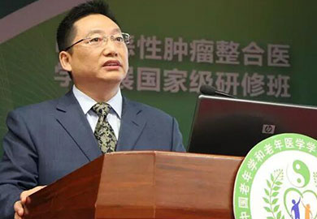
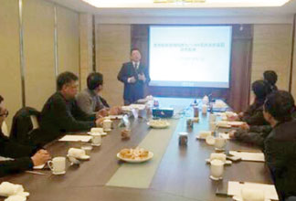
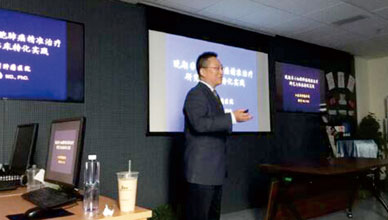
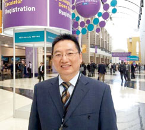
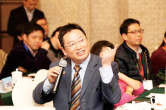
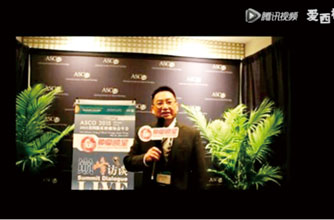
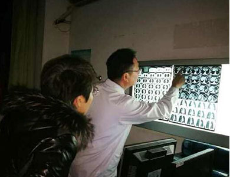
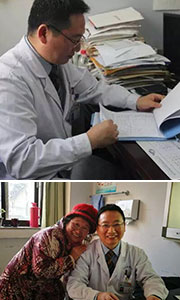

- The medicine has no boundaries, the pursuit of endless
-
★美国耶鲁大学肿瘤学博士后
★南京大学医学博士、理学博士
★江苏省肿瘤医院肿瘤内科主任医师、教授
★南京大学巴傲得生物研发中心首席医学科学家
★美国百特生物医药集团首席科学家
★国家人社部基因健康管理培训师
★江苏省老年学学会肿瘤康复专业委员会主任委员
★中国老年学和老年医学会肿瘤康复分会副主委
★中国中西医结合防治肿瘤专家委员会副主委
★中国精准医学专业委员会主任委员
-
★中国基因联盟主席
★肺癌学科带头人
★中国抗癌协会化疗专业委员会委员
★美国国际肺癌研究会IASLC
★美国ASCO高级专家会员
★欧洲肿瘤协会ESMO会员
★国际抗癌联盟UICC网络医院中国专家

- The medicine has no boundaries, the pursuit of endless
- 
-
“师者，所以传道授业解惑也。”—《师说》
除了日常诊疗工作，洪专教授经常受邀参加各种学术会议，同行间的相互交流，对他来说十分宝贵。此外，洪教授也多次出席中央电视台、江苏卫视、刘丹朋友圈等知名媒体的访谈节目，分享技术经验知识的同时，自己也获得了成长。
一切为了患者，为了患者的一切”这句话能很好地诠释了洪专教授的人生理想和价值观。由于极具权威、疗效显著、待人热情、诊治与讲解相结合，许多患者（有美国华人患者、波士顿华人患者、韩国患者等）像“追星”一样不远万里前来求医。
立即预约专家
-

苏州肿瘤基因研判专家沙龙
-

给上海肺科医院医生讲精准医疗课
-

2016 ASCO 芝加哥国际会议
-
接受江苏卫生万家灯火的个人专访
-

2016基因大会全国专家顾问会暨东区峰会
-

美国芝加哥ASCO会议上接受媒体采访

- People oriented, service first
- 万里求医
- 
- 
-
“一切为了患者，为了患者的一切”这句话能很好地诠释洪专教授的人生理想和价值观。由于极具权威、疗效显著、待人热情、诊治和讲解相结合，许多患者像“追星”一样不远万里前来求医。